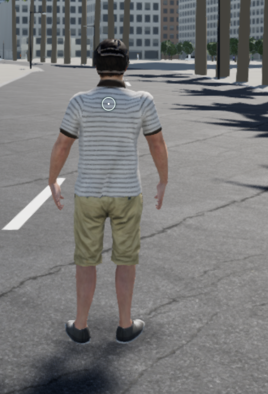
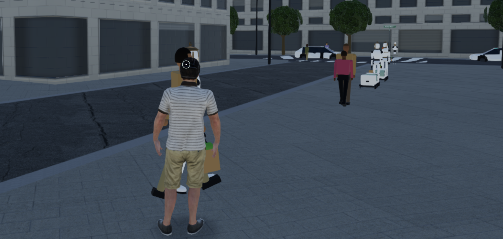
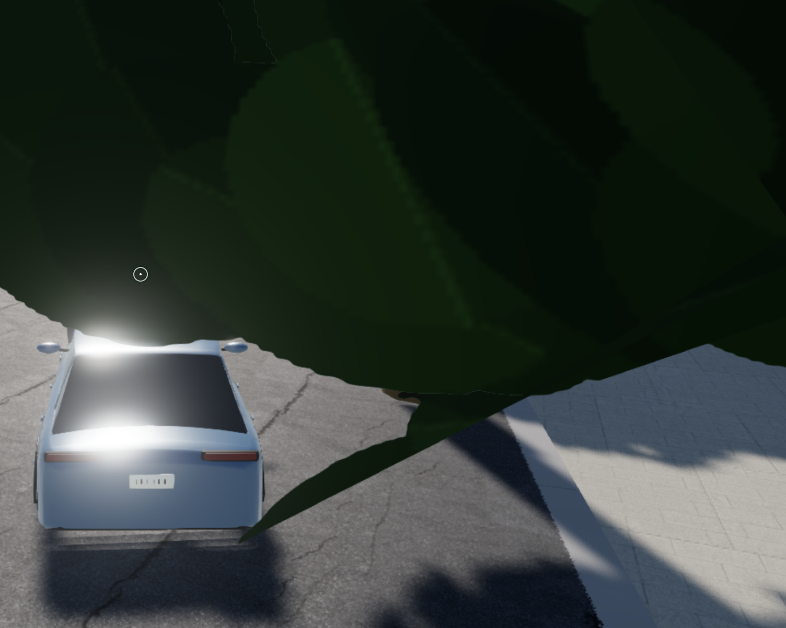
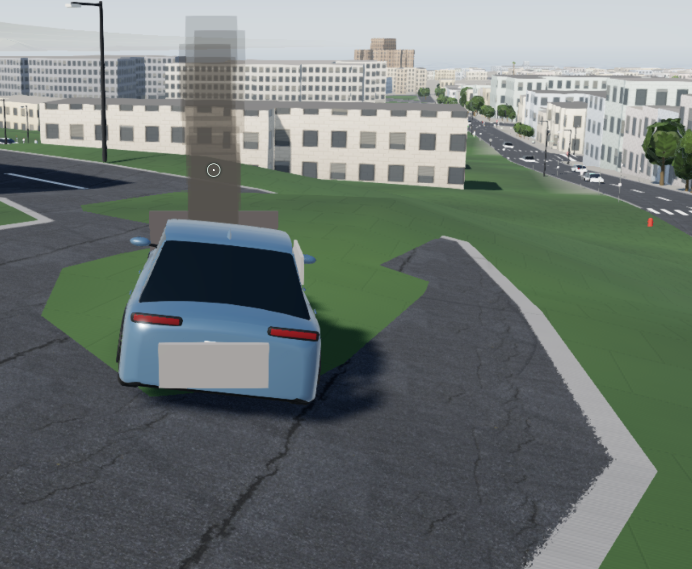
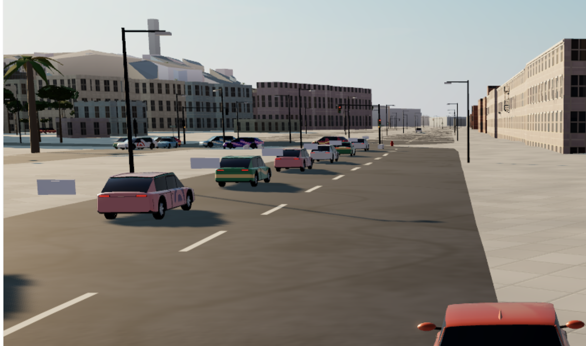
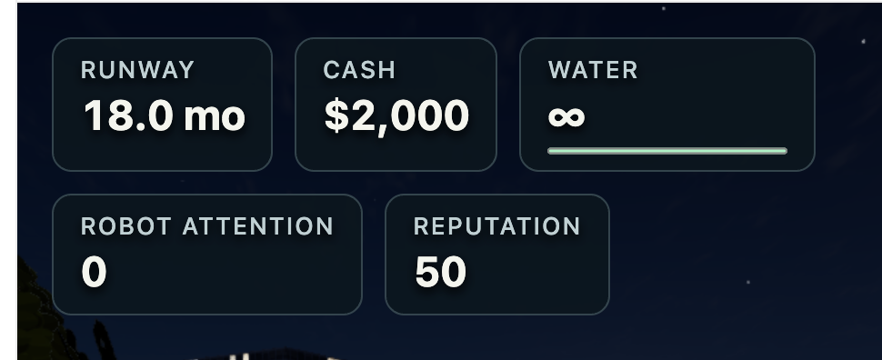
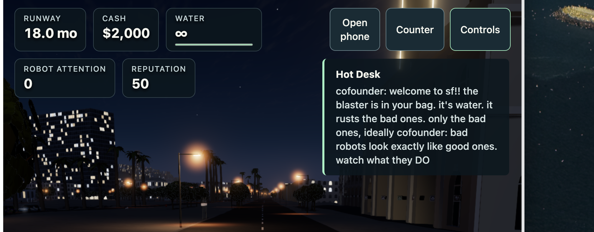
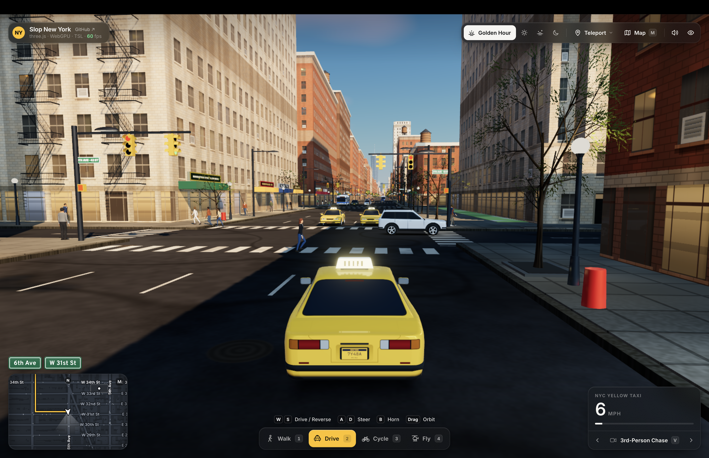
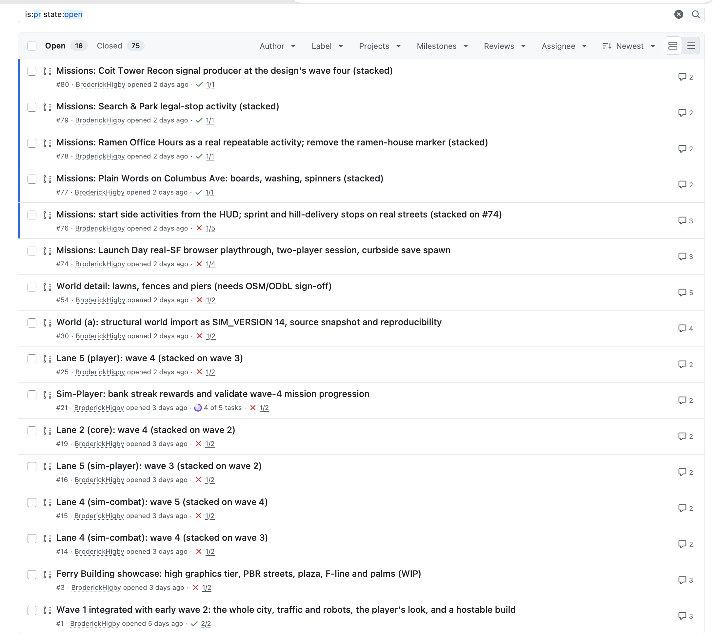
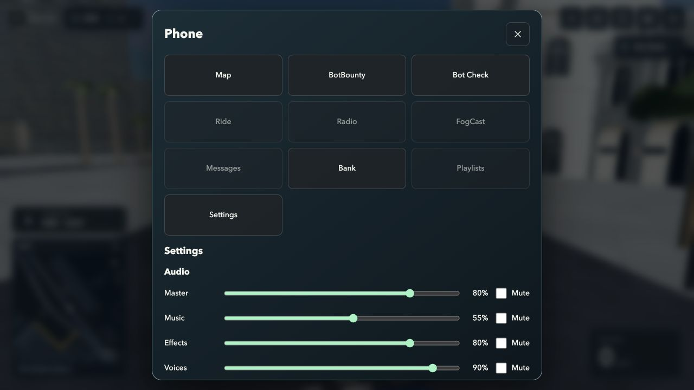

Fog City: original bug examples
Seven owner-reported bug examples, two owner-provided reference/context images, and one separate assistant audit capture. Historical images are regression references, not proof that every defect remains on current main. Original screenshots are included without resizing or editing.
1. Reticle showing over the player
The owner said there should not be a dot over the character while simply running. Preserve the contextual aiming indicator: ordinary running/walking should not show it, while aiming/spraying/scanning may show appropriate feedback.

Original: codex-clipboard-3a37b41c-9d01-4ffb-a0f4-5dc995372761.png · 550 × 808 · unmodified2. People reverting to the old avatars
The owner reported nearby people changing back to the simple block figures. Preserve the authored human characters, identities, textures and animation as the camera moves and detail tiers change. Check foot grounding separately; an image of a character is not proof that its moving feet stay above the road.

Original: codex-clipboard-5587917d-a92a-4ff7-80a4-092f33ea0c29.png · 1754 × 834 · unmodified3. Trees obstructing a street and the driving camera
The owner said trees should not be in the streets. Validate trunk placement against drivable road space, and check the follow camera near canopies. Keep appropriate roadside vegetation without planting it in traffic lanes.

Original: codex-clipboard-47cd737e-61c8-43cb-853c-33d1abd12c39.png · 1504 × 1202 · unmodified4. Grass over pavement
The owner reported grass covering roads and pavement. Preserve the existing road, curb, path, building and water exclusions; turf should be constrained to actual lawn areas and follow their support surface.

Original: codex-clipboard-3f247cc3-8722-4103-813c-8a361754d8f9.png · 1428 × 1174 · unmodified5. Detached rectangular car panels
The owner described weird bumpers in front of cars. Check that damage/body panels stay attached in the correct vehicle-local frame while cars move, turn and change detail tiers. No floating rectangles should remain around traffic.

Original: codex-clipboard-b04ec549-7eb1-44ef-94b2-401fc33cc29f.png · 1524 × 902 · unmodified6. Oversized stat cards
The owner asked for icons and disclosure rather than a smaller copy of the large dashboard. This was addressed by PR106. Preserve the compact status strip, contextual warnings and accessible, optional five-stat explanation panel.

Original: codex-clipboard-fa7943a6-df0d-4043-860e-9c5fcc428697.png · 970 × 396 · unmodified7. HUD buttons and mission text consuming the screen
The owner showed the full combination of cards, large buttons and an always-open mission paragraph. PR106 makes controls icon-based and mission detail optional. Keep the city visible, retain accessible hit targets, and preserve Continue, keyboard/gamepad navigation and narrow/touch layouts.

Original: codex-clipboard-56035d8f-861c-42f9-9fa7-687b6c4b000d.png · 2016 × 790 · unmodified8. Visual reference: Slop New York
This is an inspiration image, not a Fog City bug screenshot. It explains the requested street-level visual richness, traffic, lighting and map treatment. The owner explicitly wants San Francisco and the existing characters retained. Use the project's licensed/attributed source study; do not import NYC geography or treat this image as permission to reuse unrelated third-party assets.

Original: codex-clipboard-8ee86115-16fb-4884-8b9c-0a874dd61a1d.png · 3420 × 2214 · unmodified9. Historical PR-list context
This screenshot explains the request to consolidate unfinished PR work. It is historical UI, not the current GitHub state. Read PR_INVENTORY.md and refresh the live PRs before making any merge or supersession decision.

Original: codex-clipboard-ae99c95f-6605-4ff4-8c8f-af964dcfe659.png · 2178 × 1942 · unmodifiedAdditional current audit image: phone settings
This last image was captured by the assistant during the handoff audit, not uploaded as an original bug example. It shows the existing large phone modal and Audio settings. The live UI also has saved-progress controls; a Graphics selector is absent. This is the starting point for the requested phone redesign and Auto/Low/Standard/High selector.

Assistant audit capture; not an original user attachment.Read the annotated Markdown · Full build handoff · Priorities · Image provenance